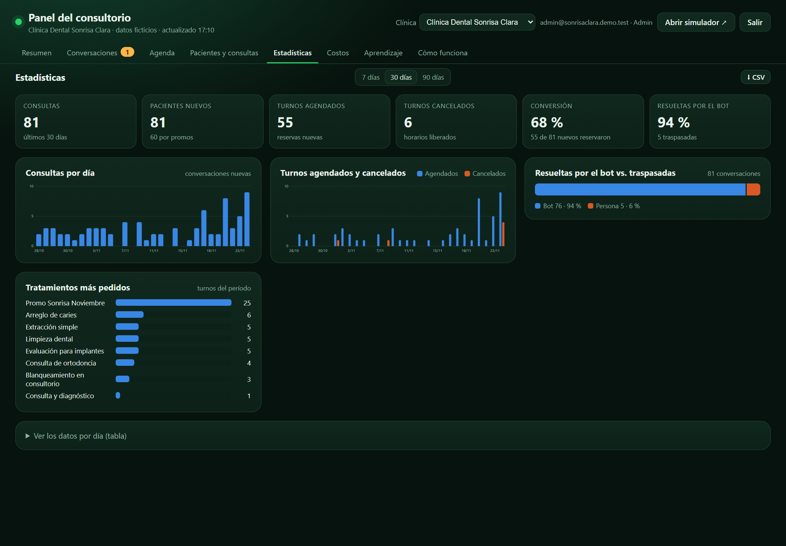
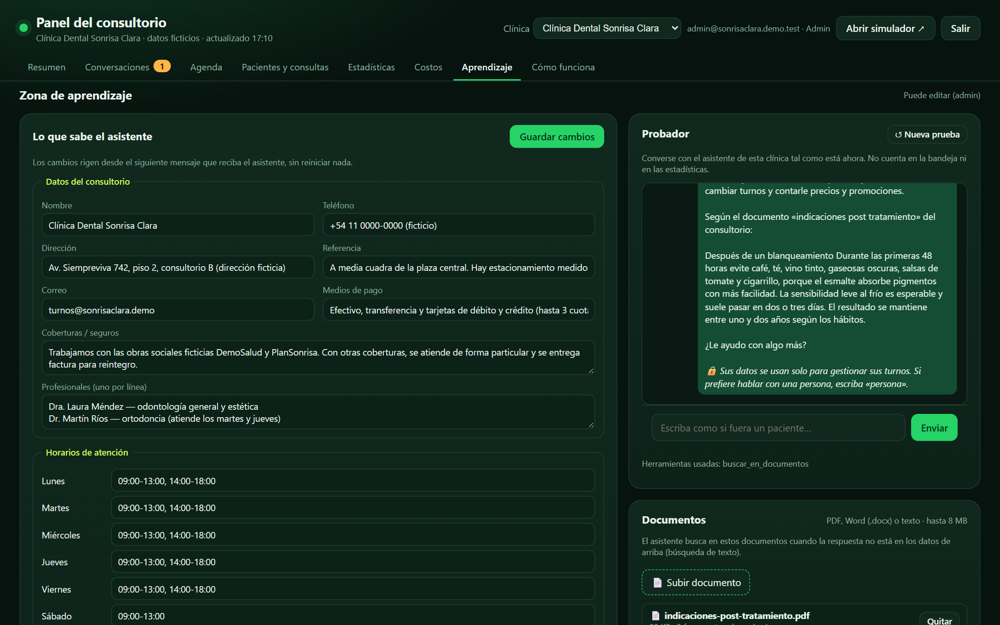
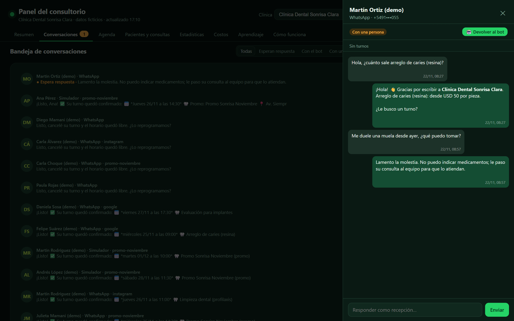
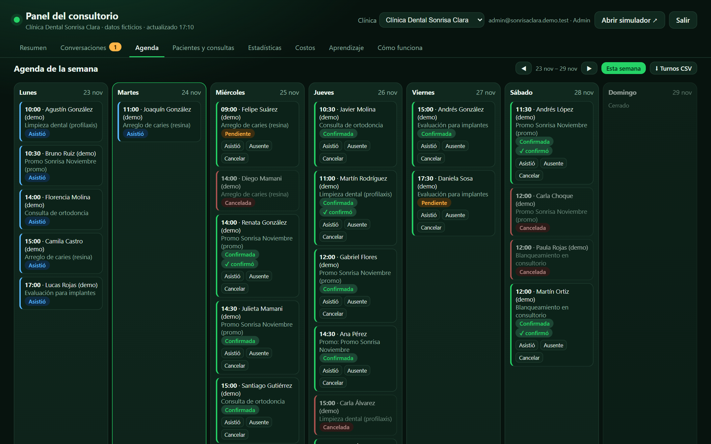

MVP de plataforma de atención multiempresa: cada clínica tiene su asistente que responde, agenda sobre la agenda real, recuerda los turnos, ofrece los huecos de las cancelaciones y reactiva pacientes; y su equipo trabaja desde un panel con roles, estadísticas y costos de la IA.

Simulador web: el chat usa el mismo motor que WhatsApp; la agenda se lee de Google Calendar y resalta en verde el turno que acaba de reservar el bot. Datos ficticios.
Los consultorios que invierten en promociones reciben consultas por WhatsApp a toda hora. Cada consulta sin respuesta, cada turno olvidado y cada hueco que deja una cancelación es facturación perdida.
Canal → clínica → motor → IA ⇄ herramientas → agenda y base · El panel consulta la base con el token del usuario, así la separación entre clínicas la garantiza PostgreSQL.
Stack: Node.js 24 · TypeScript · Express · SDK de Anthropic y de OpenAI · Google Calendar API · Supabase (PostgreSQL, Auth, RLS) · WhatsApp Cloud API · pdf-parse y mammoth · HTML/CSS/JS sin framework con gráficos SVG propios.




| Decisión | Motivo |
|---|---|
| El modelo propone, el backend decide | Toda acción pasa por herramientas que validan horario, anticipación y disponibilidad. El modelo nunca inventa horarios. |
| Doble reserva imposible | Cerrojo en el proceso + índice único parcial (clinic_id, start_at); reserva en dos pasos con vuelta atrás si el calendario falla. |
| Seguridad por clínica en la base | RLS con políticas por clinic_members; el panel usa el token del usuario. Una prueba contra Supabase real verifica que recepción no lee otra clínica ni ve costos. |
| Conocimiento editable sin reiniciar | El prompt de cada clínica se arma por turno desde su conocimiento: un cambio de precio rige desde el mensaje siguiente y, mientras no cambie, se aprovecha la caché. |
| Documentos con búsqueda de texto | tsvector en español + índice GIN: costo cero y sin otro servicio. Documentado el paso a pgvector (búsqueda híbrida) sin cambiar la interfaz. |
| Lista de espera con oferta temporal | El hueco se ofrece a la primera persona que coincide en rango y franja; si no responde en 30 min pasa a la siguiente; si alguien lo tomó antes, se avisa. |
| Proveedor de IA intercambiable | Claude u OpenAI por variable de entorno; si falta la clave pasa solo al modo sin IA, que sirve para demos y pruebas deterministas. |
| Entornos separados | Entorno de pruebas en memoria con 30 días de datos ficticios; en producción el servidor no arranca sin base real, firma de Meta ni secreto de sesión. |
Cada caso arma un entorno aislado con reloj fijo, conversa con el bot y verifica el estado final (turnos, agenda, derivaciones, lista de espera), no solo el texto.
| Suite | Casos | Qué cubre |
|---|---|---|
| Calidad | 8 | Horario ocupado, cancelación de último momento, mensaje confuso, pedido de persona, fuera de horario, doble reserva, cambio de idea, consulta clínica — 8/8 ✓ |
| Multiempresa | 12 | Datos separados, doble reserva por clínica, agenda etiquetada, webhook por número, acceso por rol |
| Panel y aprendizaje | 19 | Tomar / pausar / devolver, agenda, estadísticas, costos, conocimiento al instante, PDF con búsqueda, probador, CSV |
| Lista de espera y reactivación | 10 | Ofrecer, aceptar, rechazar, vencer, horario tomado, rango y franja, invitación única |
| WhatsApp y recordatorios | 22 | Webhook firmado, botones, audio, plantillas fuera de la ventana de 24 h, reloj simulado |
| Integración real | 8 pasos | Supabase y Google Calendar reales: reserva, índice por clínica, búsqueda de documentos y RLS |
Estimación por conversación típica (6 mensajes del paciente). El panel mide tokens y costo de cada mensaje y proyecta el mes. A confirmar con la medición real.
| Modelo | Precio por millón de tokens (entrada / salida) | Por conversación |
|---|---|---|
| Claude Opus 5.5 | USD 4 / USD 20 | ~USD 0,11 |
| Claude Sonnet 5.5 | USD 2 / USD 10 | ~USD 0,055 |
| Claude Haiku 5.5 | USD 0,10 / USD 0,50 | ~USD 0,001–0,003 |
Infraestructura de la demo: Supabase, Google Calendar, número de prueba de WhatsApp y túnel de Cloudflare en planes gratuitos. En producción se suman los mensajes que inicia el negocio por WhatsApp (recordatorios, ofertas, reactivación), según país y categoría, y un hosting siempre encendido.
Referencia de retorno: si un turno vale USD 40 y la lista de espera recupera un hueco por semana, cubre con holgura miles de conversaciones con Haiku.